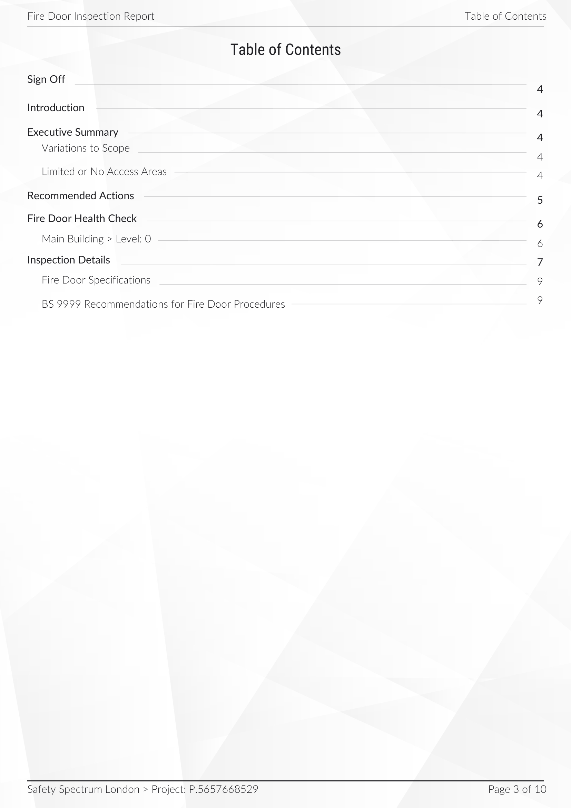
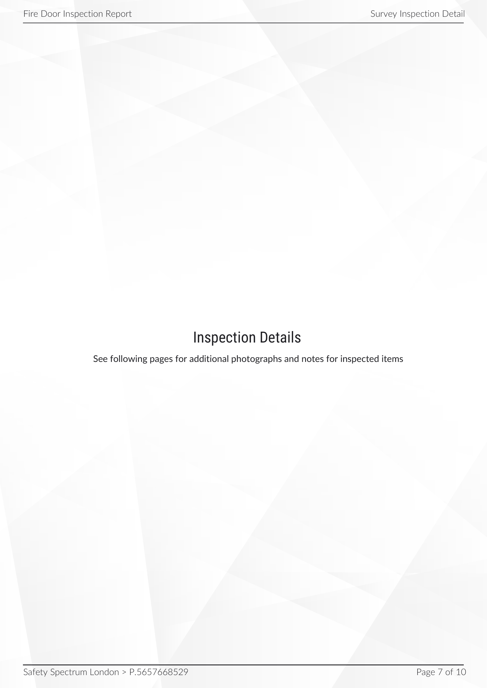
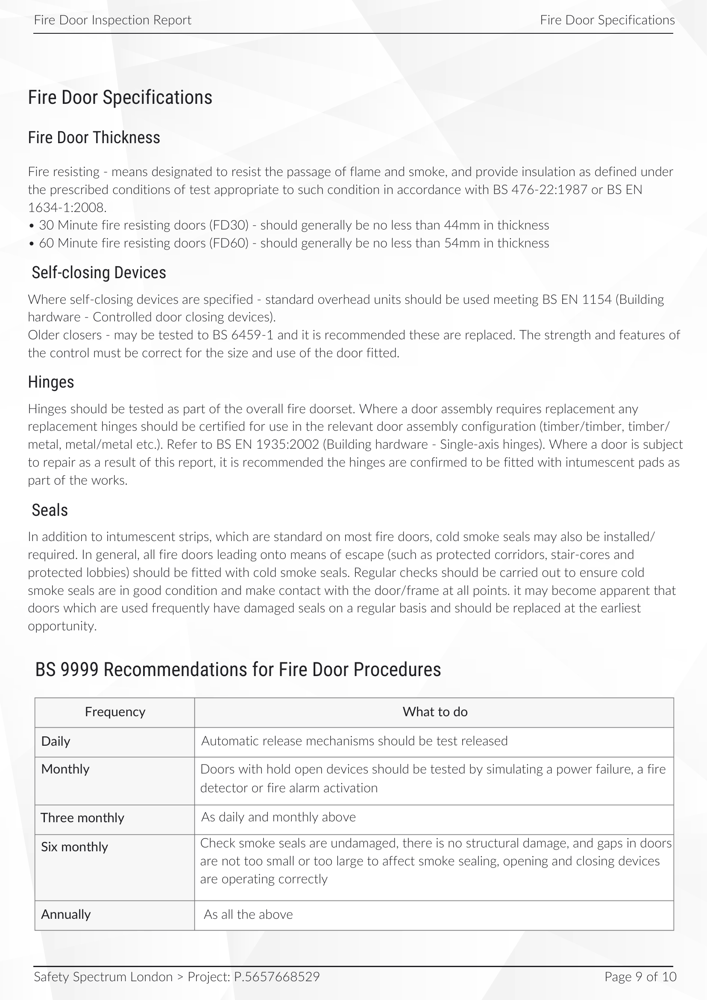

| Report By | Safety Spectrum London |
|---|---|
| Client | Christianah |
| Project Site | P.5657668529 |
| Address | 7 Gurney close E15 1SJ |
| Site Location |
|
| Site Description | Inspection carried out for main flat door. |
| Inspection Technicians | Muhammad Khokhar |
| Inspection Dates QC | 13 March 2026 |
| Date | 13 March 2026 |
An overview of the data collected on site, during the survey
| Inspected | Passed | Failed |
|---|---|---|
| 1 | 1 | 0 |

Safety Spectrum London was instructed to undertake a fire door condition inspection of the selected doors within the property. The inspection reviewed the visible condition of each door assembly and recorded whether the observed elements appeared suitable based on the inspection criteria used during the survey.
All areas within scope were accessed during the survey
These areas could not be fully accessed during survey.
| Door Ref | Building / Level / Location | Access / Notes | Photo | Page |
|---|---|---|---|---|
| all locations and doors were fully accessed | ||||
Based on this inspection, the recommended actions are summarised below. Please see inspection details (p. 0) for more details
| Door Ref | Building/Level / Location | Remedial Actions | Needs Replacing? | Page |
|---|---|---|---|---|
| Door 1 | Main Flat / 0 / Main Flat door | please see inspection details | No | 8 |
The fire door inspection findings are summarised below:
| Door Ref | Overall Status | Door Rating Sufficient? | Door & Frame | Hinges | Gaps | Seals | Closer | Lockset | Glazing | Signage | General Comments | Page |
|---|---|---|---|---|---|---|---|---|---|---|---|---|
| Door 1 | PASS | YES✓ | PASS | PASS | PASS | PASS | PASS | PASS | N/A | N/A | 8 |

| Overall Result | Pass |
|---|---|
| Door Reference | Door 1 |
| Door Type | FD30 |
| Dimensions (mm) | Door 1: 838mm x 1975mm x 47mm |
| Door / Frame Material | Door:Timber /Frame:Timber |
| Wall Type | Solid brickwork |
| Requirement | Certified / Rating | Sufficient Rating? |
|---|---|---|
| FD30 | Yes | Yes |
| Category | Result | Details |
|---|---|---|
| Door & Frame Condition | Pass | Satisfactory condition of Frame. Door is of 47mm in thickness. |
| Hinges | Pass | Satisfactory. 3 fire rated hinges present. |
| Gaps | Pass | Gap around the door is acceptable. Each side not more than 4mm. |
| Seals | Pass | Intumescent strips and smoke seals in satisfactory condition installed. |
| Closer | Pass | Inner chain door closer present. |
| Handle/Latch | Pass | Latch/Handle is fitted in the correct location. |
| Glazing | N/A | |
| Signage | N/A |
